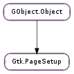

| static | new() |
| static | new_from_file(file_name) |
| static | new_from_key_file(key_file, group_name) |
| copy() | |
| get_bottom_margin(unit) | |
| get_left_margin(unit) | |
| get_orientation() | |
| get_page_height(unit) | |
| get_page_width(unit) | |
| get_paper_height(unit) | |
| get_paper_size() | |
| get_paper_width(unit) | |
| get_right_margin(unit) | |
| get_top_margin(unit) | |
| load_file(file_name) | |
| load_key_file(key_file, group_name) | |
| set_bottom_margin(margin, unit) | |
| set_left_margin(margin, unit) | |
| set_orientation(orientation) | |
| set_paper_size(size) | |
| set_paper_size_and_default_margins(size) | |
| set_right_margin(margin, unit) | |
| set_top_margin(margin, unit) | |
| to_file(file_name) | |
| to_key_file(key_file, group_name) |
None
None
Bases: GObject.Object
A Gtk.PageSetup object stores the page size, orientation and margins. The idea is that you can get one of these from the page setup dialog and then pass it to the Gtk.PrintOperation when printing. The benefit of splitting this out of the Gtk.PrintSettings is that these affect the actual layout of the page, and thus need to be set long before user prints.
The margins specified in this object are the “print margins”, i.e. the parts of the page that the printer cannot print on. These are different from the layout margins that a word processor uses; they are typically used to determine the minimal size for the layout margins.
To obtain a Gtk.PageSetup use Gtk.PageSetup.new () to get the defaults, or use Gtk.print_run_page_setup_dialog () to show the page setup dialog and receive the resulting page setup.
A page setup dialog
static GtkPrintSettings *settings = NULL;
static GtkPageSetup *page_setup = NULL;
static void
do_page_setup (void)
{
GtkPageSetup *new_page_setup;
if (settings == NULL)
settings = gtk_print_settings_new ();
new_page_setup = gtk_print_run_page_setup_dialog (GTK_WINDOW (main_window),
page_setup, settings);
if (page_setup)
g_object_unref (page_setup);
page_setup = new_page_setup;
}
Printing support was added in GTK+ 2.10.
| Returns: | a new Gtk.PageSetup. |
|---|---|
| Return type: | Gtk.PageSetup |
Creates a new Gtk.PageSetup.
| Parameters: | file_name (str) – the filename to read the page setup from |
|---|---|
| Raises: | GLib.GError |
| Returns: | the restored Gtk.PageSetup |
| Return type: | Gtk.PageSetup |
Reads the page setup from the file file_name. Returns a new Gtk.PageSetup object with the restored page setup, or None if an error occurred. See Gtk.PageSetup.to_file ().
| Parameters: |
|
|---|---|
| Raises: | |
| Returns: | the restored Gtk.PageSetup |
| Return type: |
Reads the page setup from the group group_name in the key file key_file. Returns a new Gtk.PageSetup object with the restored page setup, or None if an error occurred.
| Returns: | a copy of other |
|---|---|
| Return type: | Gtk.PageSetup |
Copies a Gtk.PageSetup.
| Parameters: | unit (Gtk.Unit) – the unit for the return value |
|---|---|
| Returns: | the bottom margin |
| Return type: | float |
Gets the bottom margin in units of unit.
| Parameters: | unit (Gtk.Unit) – the unit for the return value |
|---|---|
| Returns: | the left margin |
| Return type: | float |
Gets the left margin in units of unit.
| Returns: | the page orientation |
|---|---|
| Return type: | Gtk.PageOrientation |
Gets the page orientation of the Gtk.PageSetup.
| Parameters: | unit (Gtk.Unit) – the unit for the return value |
|---|---|
| Returns: | the page height. |
| Return type: | float |
Returns the page height in units of unit.
Note that this function takes orientation and margins into consideration. See Gtk.PageSetup.get_paper_height ().
| Parameters: | unit (Gtk.Unit) – the unit for the return value |
|---|---|
| Returns: | the page width. |
| Return type: | float |
Returns the page width in units of unit.
Note that this function takes orientation and margins into consideration. See Gtk.PageSetup.get_paper_width ().
| Parameters: | unit (Gtk.Unit) – the unit for the return value |
|---|---|
| Returns: | the paper height. |
| Return type: | float |
Returns the paper height in units of unit.
Note that this function takes orientation, but not margins into consideration. See Gtk.PageSetup.get_page_height ().
| Returns: | the paper size |
|---|---|
| Return type: | Gtk.PaperSize |
Gets the paper size of the Gtk.PageSetup.
| Parameters: | unit (Gtk.Unit) – the unit for the return value |
|---|---|
| Returns: | the paper width. |
| Return type: | float |
Returns the paper width in units of unit.
Note that this function takes orientation, but not margins into consideration. See Gtk.PageSetup.get_page_width ().
| Parameters: | unit (Gtk.Unit) – the unit for the return value |
|---|---|
| Returns: | the right margin |
| Return type: | float |
Gets the right margin in units of unit.
| Parameters: | unit (Gtk.Unit) – the unit for the return value |
|---|---|
| Returns: | the top margin |
| Return type: | float |
Gets the top margin in units of unit.
| Parameters: | file_name (str) – the filename to read the page setup from |
|---|---|
| Raises: | GLib.GError |
| Returns: | True on success |
| Return type: | bool |
Reads the page setup from the file file_name. See Gtk.PageSetup.to_file ().
| Parameters: |
|
|---|---|
| Raises: | |
| Returns: | True on success |
| Return type: |
Reads the page setup from the group group_name in the key file key_file.
| Parameters: |
|
|---|
Sets the bottom margin of the Gtk.PageSetup.
| Parameters: |
|
|---|
Sets the left margin of the Gtk.PageSetup.
| Parameters: | orientation (Gtk.PageOrientation) – a Gtk.PageOrientation value |
|---|
Sets the page orientation of the Gtk.PageSetup.
| Parameters: | size (Gtk.PaperSize) – a Gtk.PaperSize |
|---|
Sets the paper size of the Gtk.PageSetup without changing the margins. See Gtk.PageSetup.set_paper_size_and_default_margins ().
| Parameters: | size (Gtk.PaperSize) – a Gtk.PaperSize |
|---|
Sets the paper size of the Gtk.PageSetup and modifies the margins according to the new paper size.
| Parameters: |
|
|---|
Sets the right margin of the Gtk.PageSetup.
| Parameters: |
|
|---|
Sets the top margin of the Gtk.PageSetup.
| Parameters: | file_name (str) – the file to save to |
|---|---|
| Raises: | GLib.GError |
| Returns: | True on success |
| Return type: | bool |
This function saves the information from setup to file_name.
| Parameters: |
|
|---|
This function adds the page setup from setup to key_file.